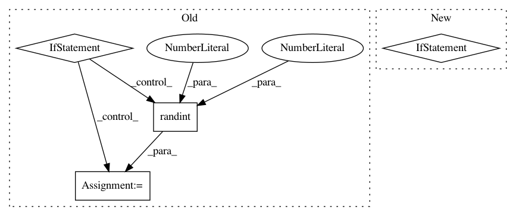

403b4fc7a25da5d957b24f1c269103ef6e290bd6,keras/preprocessing/image.py,ImageDataGenerator,flow,#ImageDataGenerator#Any#Any#Any#Any#Any#Any#Any#Any#,142
Before Change
if seed:
random.seed(seed)
if shuffle:
seed = random.randint(1, 10e6)
np.random.seed(seed)
np.random.shuffle(X)
np.random.seed(seed)
np.random.shuffle(y)
b = 0
while 1:
current_index = (b * batch_size) % X.shape[0]
if X.shape[0] >= current_index + batch_size:
After Change
b = 0
total_b = 0
while 1:
if b == 0:
if seed is not None:
np.random.seed(seed + total_b)
if shuffle:
index_array = np.random.permutation(X.shape[0])
else:
index_array = np.arange(X.shape[0])
current_index = (b * batch_size) % X.shape[0]
if X.shape[0] >= current_index + batch_size:
current_batch_size = batch_size
else:
In pattern: SUPERPATTERN
Frequency: 3
Non-data size: 4
Instances
Project Name: keras-team/keras
Commit Name: 403b4fc7a25da5d957b24f1c269103ef6e290bd6
Time: 2016-01-26
Author: udi@benreuven.com
File Name: keras/preprocessing/image.py
Class Name: ImageDataGenerator
Method Name: flow
Project Name: ray-project/ray
Commit Name: 9bfc2c4b5462871f0fe669b3aabc5f2772bc3a6f
Time: 2020-04-01
Author: ian.rodney@gmail.com
File Name: python/ray/worker.py
Class Name:
Method Name: connect
Project Name: chainer/chainercv
Commit Name: f57def37d83e86ec79b9ba16eb2f1977827d0eed
Time: 2017-05-03
Author: Hakuyume@users.noreply.github.com
File Name: tests/visualizations_tests/test_vis_bbox.py
Class Name: TestVisBbox
Method Name: test_vis_bbox